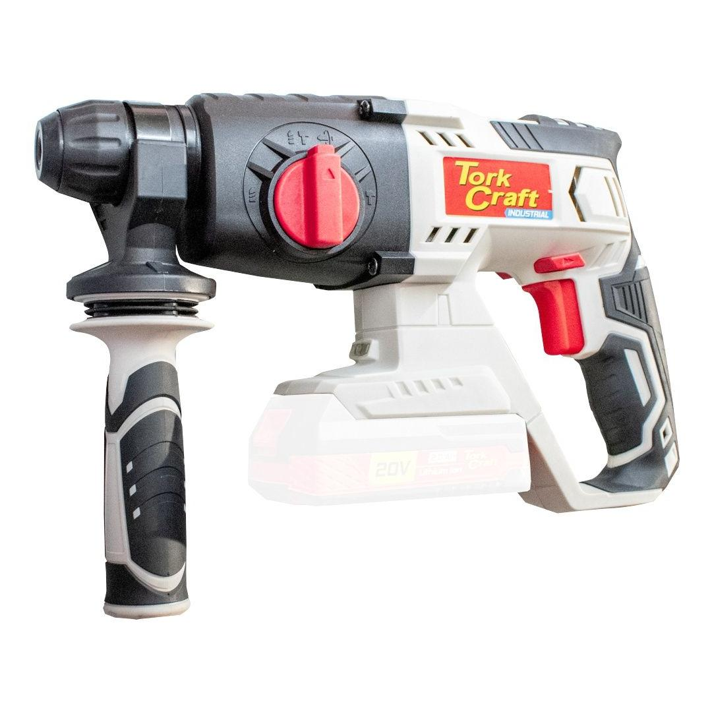
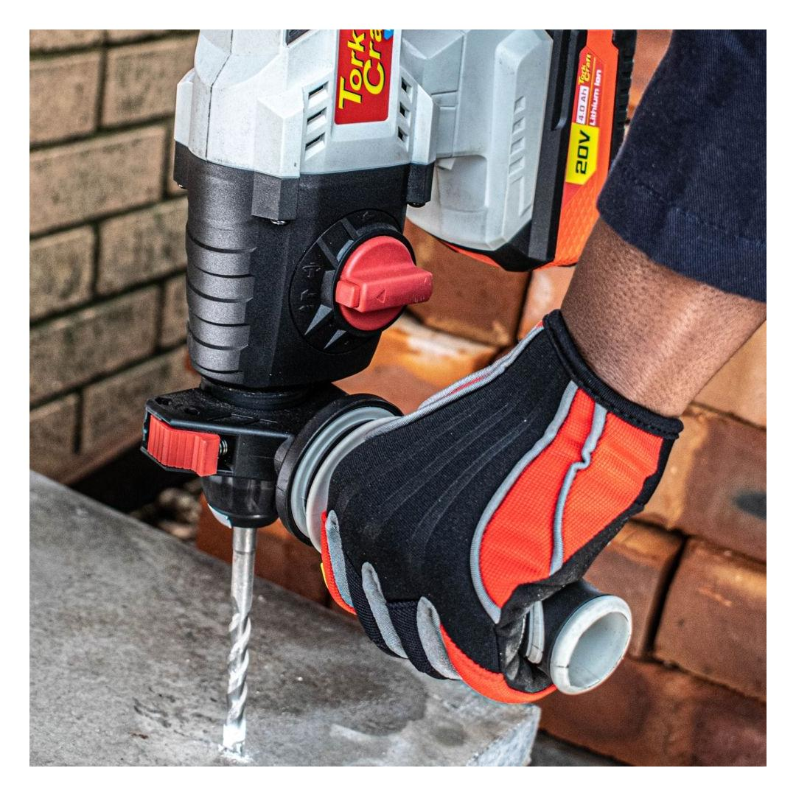

TC20190
2309.20


The rotary hammer is powered by a powerful 20V battery (not included). The auxiliary handle can be positioned 360 degrees around the chuck for added control when drilling or chiseling.
The rotary hammer makes use of SDS plus accessories and a built-in light illuminates the surface for increased visibility.